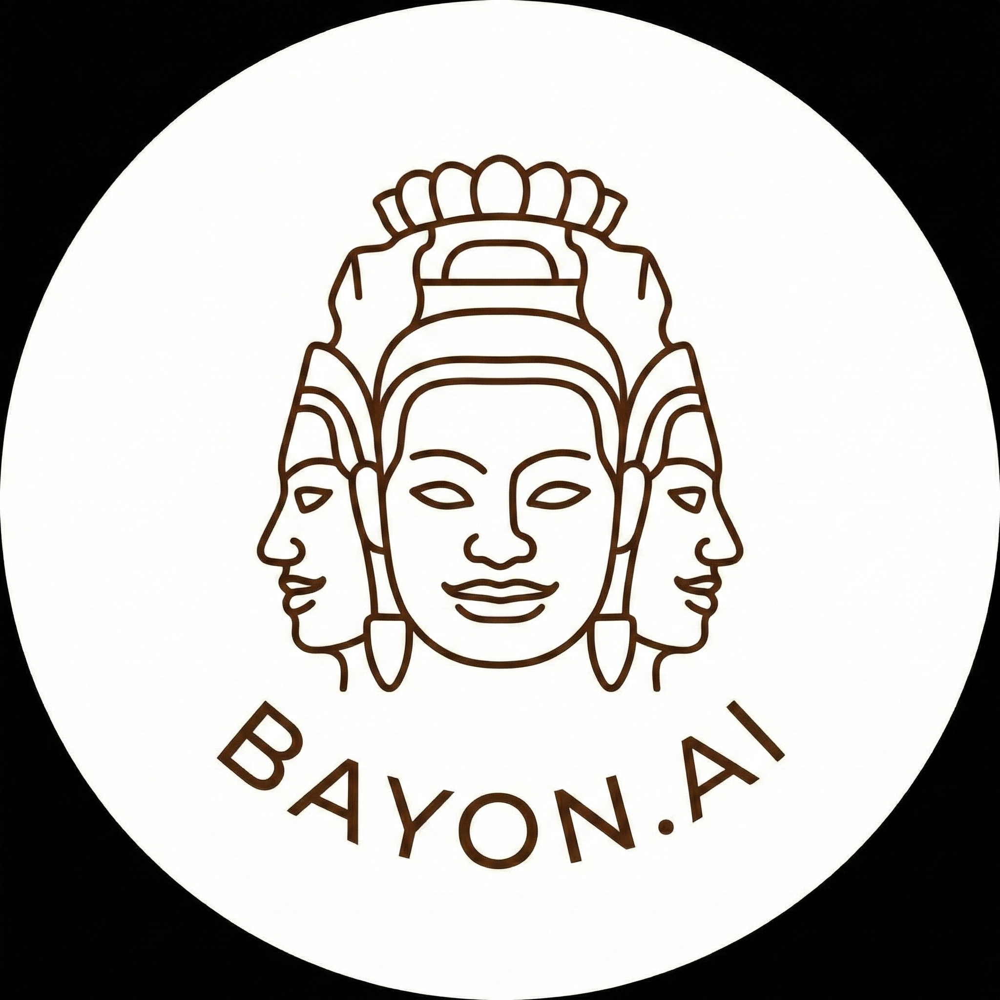

Bayon helps organisations design, build, and govern AI-native ventures, products, and operating models for real human-AI partnership
Built on the venture methodology behind 25+ ventures and more than $700M in commercial value.
AI has made every individual in your organisation more productive. But productive individuals do not make productive firms.
Most organisations are bolting AI capability onto structures built for a different era. Pilots stall at deployment. Teams ship features without a business model around them. Governance lags behind capability. Executives hesitate because the transformation feels too risky while the current business needs to keep running.
The organisations that win will not be the first to adopt AI. They will be the first to redesign how they operate around it.
Just as corporate venture building allowed organisations to create new products and businesses off the main branch, AI Venture Building allows you to build the AI-native version of your business without risking the current one.
In practice: a contained AI-native business unit, workflow, or product model that can prove value before wider rollout.
We run an AI Venture Design Sprint to define the opportunity, the operating model, the human-AI boundaries, the governance, and the measurement framework.
We shape, prototype, and build the AI-native venture. Not just technology. Business, customer, and technology together.
We create the protocols, oversight patterns, and measurement systems that let the venture operate with trust and scale with confidence.
AI coding tools can accelerate delivery. They do not solve for business design, customer fit, or organisational trust.
Most AI efforts fail because one of three things is missing: viable economics, a real user need, or an operating model that can sustain adoption and governance. Bayon designs all three together.
Revenue model, operating economics, competitive positioning, and the commercial case for why the venture should exist.
Experience design, adoption patterns, value delivery, and the evidence that real users need what you are building.
Architecture, AI systems, human-AI boundaries, integration, scalability, and the governance to sustain trust.
Bayon grew out of Triniti Ventures, a digital innovation and venture studio that operated for over seven years across banking, fintech, government, healthcare, and aviation.
Commercial value created for clients across corporates, startups, and government.
Digital ventures and products designed and built, including Athena (>$500M), EarlyTrade (>$150M), Tribe, Striver, Calven, and Pointer.
Innovation and product work for DBS Bank, HSBC, NAB, Eftpos, Cathay, the Australian Government, and Permira.
Two major agentic AI ventures designed and built, including a secure enterprise-grade AI platform on AWS Bedrock.
Selected examples available on request or in an introductory discussion.
Bayon works best with leaders who know AI is changing how their organisation should operate, but need a safer way to prove what the new model should be.
Typically: senior leaders in innovation, product, transformation, and business design.
Productivity gains are visible, but they are not translating into business value.
The system works in a controlled environment but creates friction in the real organisation.
Features are shipping quickly, but the business model, customer experience, and operating design are undercooked.
You need a contained way to prove a new model before committing the whole organisation to it.
Beyond client work, Bayon maintains a platform and research layer that strengthens how we design, evaluate, and govern human-AI systems.
That includes tools, APIs, experiments, and original research into the operating conditions for durable human-AI partnership. Built for both human and machine participants.
Bayon helps you define, test, and govern a contained AI-native model before wider transformation.